NYU CUSP - Spring, Summer, 2020: Capstone
Data Cleaning and Analysis (Python, ArcGIS), Data Visualization (ArcGIS, Tableau)
The Capstone team believes each NYC neighborhood has its own nightlife profile with defining characteristics, and that nightlife policy should be curated to each area. With data from the NYC Mayors's Office of Media and Entertainment's April Covid-19 Impact Survey, NYC Open Data, LiveXYZ, Yelp, and BetaNYC, the team was able to predict select NYC neighborhoods' risk of experiencing permanent nightlife cultural loss. The deliverables are interactive dashboards created from the text and risk analyses that MOME will have available as they continue to support the NYC nightlife industry.
Project Site
View Dashboards: Neighborhood Risk Neighborhood Profile
Click to enlarge
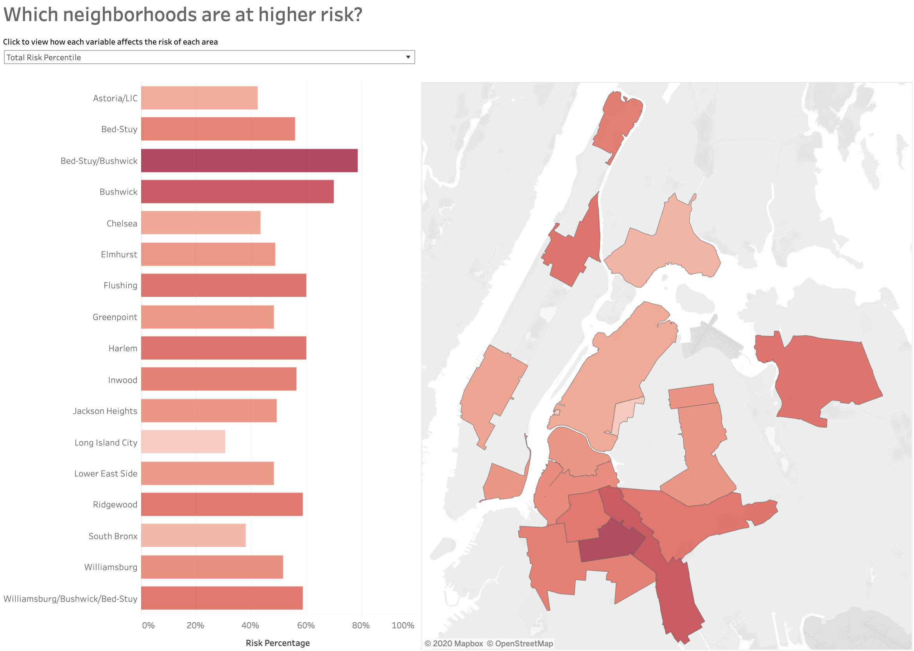
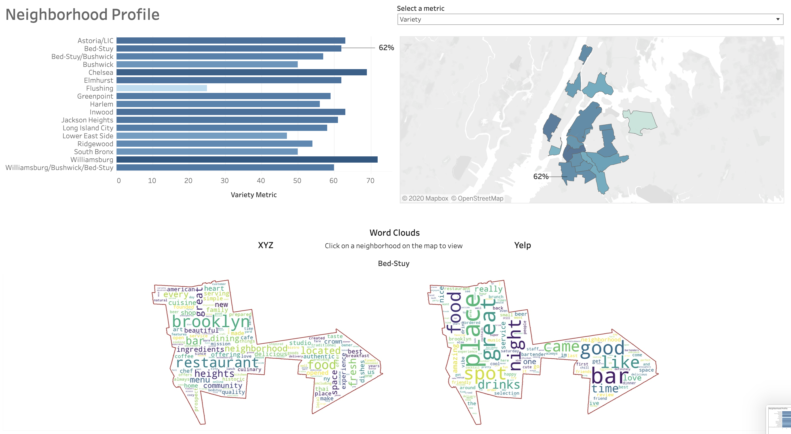
NYU CUSP - Fall, 2019: Civic Analytics & Urban Intelligence
Data Cleaning and Analysis (Python, ArcGIS), Data Visualization (ArcGIS)
My research for this course involved examining NYC Vision Zero's successfulness on bike safety. I applied the Seattle Department of Transportation Vision Zero Team's identified bike crash factors to NYC to determine the streets with high likelihood of bike crashes.
Click to enlarge
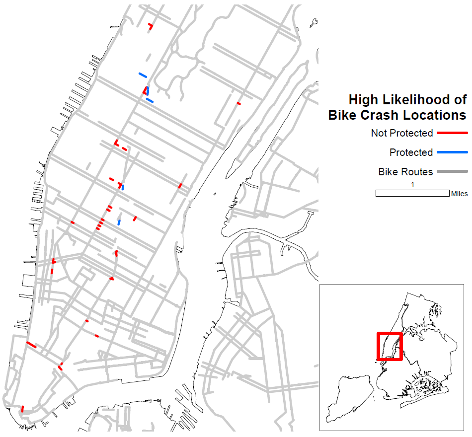
Hunter College - Fall, 2018: GTECH 38517 Free and Open Source Software for GIS
Data Cleaning and Analysis (Excel, Python), Data Visualization (QGIS, GeoServer, GeoWebServices, Leaflet, WebGIS)
Throughout the course, the class utilized various free and open source softwares (FOSS) to examine a research question. I used the same question from my Spring 2017 Intro to GIS final project: What is the relationship between the distribution of Airbnb listings and median household incomes in NYC? Softwares used: QGIS, GeoServer, Leaflet.
Click to enlarge
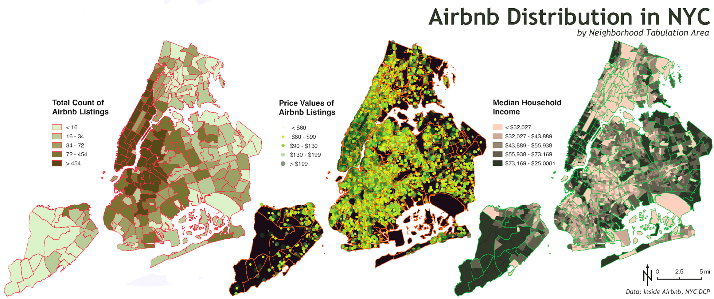
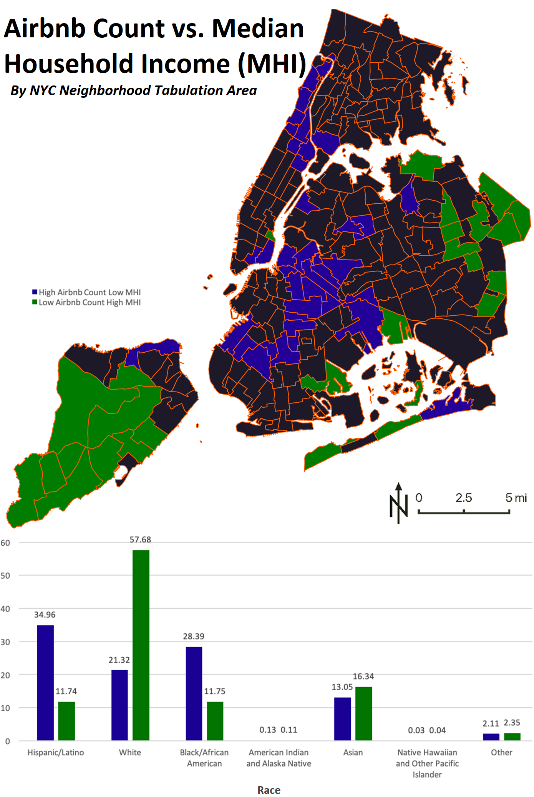
Hunter College - Fall, 2018: GTECH 380 Introduction to Cartographic Design and Geovisualization
Data Cleaning (Excel, Python), Data Visualization (ArcGIS)
Each assignment required to create a map using techniques reviewed in class. The first map, "Shipwrecks in Seattle's Puget Sound," was the final map project for the course. The assignment was to create any map with the given Puget Sound shipwreck data. The second map, "Median Income Wage Gap 2005 - 2017," was a homework assignment that focused on chloropleth maps. The class was given ACS Census data and we were to choose which information to show and the styling of the information. The third map, "School Distribution in NYC, Community Board 8," was a homework assignment that focued on symbology and labeling. The class was given a list of private and public school data for Community Board 8 and we were to choose how each point is labeled.
Click to enlarge
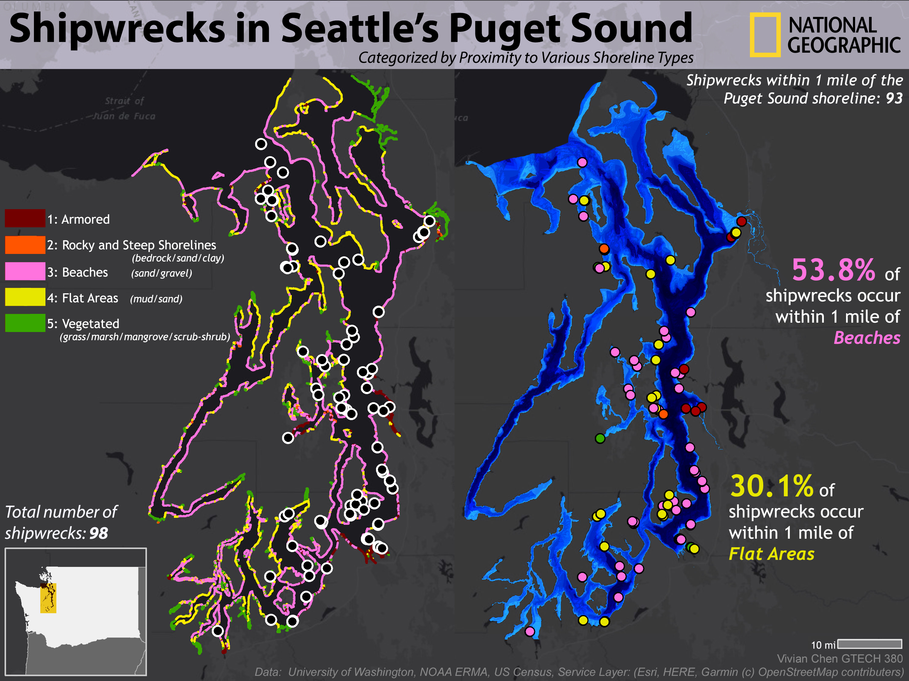
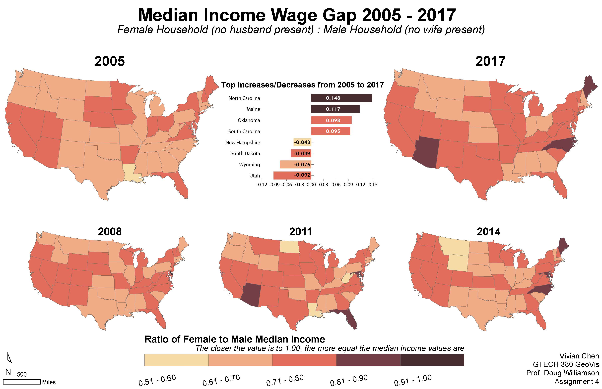
Hunter College - Spring, 2018: GTECH 361 GeoInformatics
Data Cleaning and Analysis (Excel, Python, ArcGIS), Data Visualization (ArcGIS)
For my final project for this class, I analyzed the spatial distribution of Urgent Care Centers in NYC in comparison to median household income.
Click to enlarge

CUNY Graduate Center - Spring, 2018: Antiquity in Gotham, Map of Neo-Antique Sites
Data Cleaning and Aggregating (Excel), Data Visualization (CARTO)
Working with Dr. Elizabeth Macaulay-Lewis at the CUNY Graduate Center, I created a database and an interactive map of landmarks and ancient architectural forms in New York City.
Link to Website
Link to CARTO Map
Click to enlarge
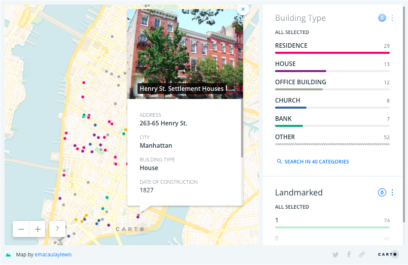
Hunter College - Spring, 2018: GTECH 38501 Urban Applications of GIS
Data Cleaning and Analysis (Excel, Python, ArcGIS), Data Visualization (ArcGIS)
I examined the proximity of restaurants and grab&go places to subway lines and stations.
Click to enlarge
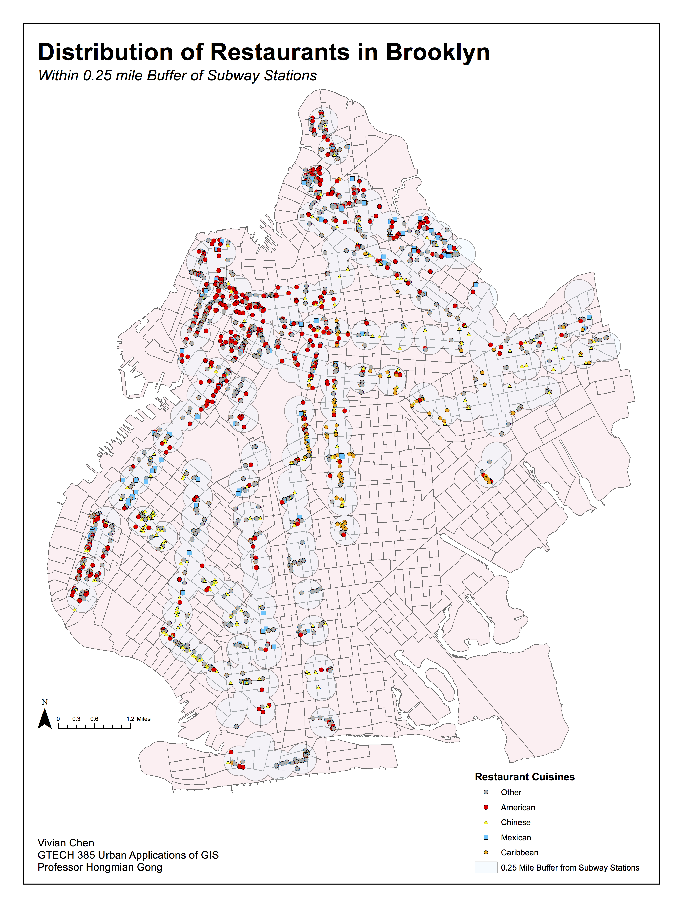
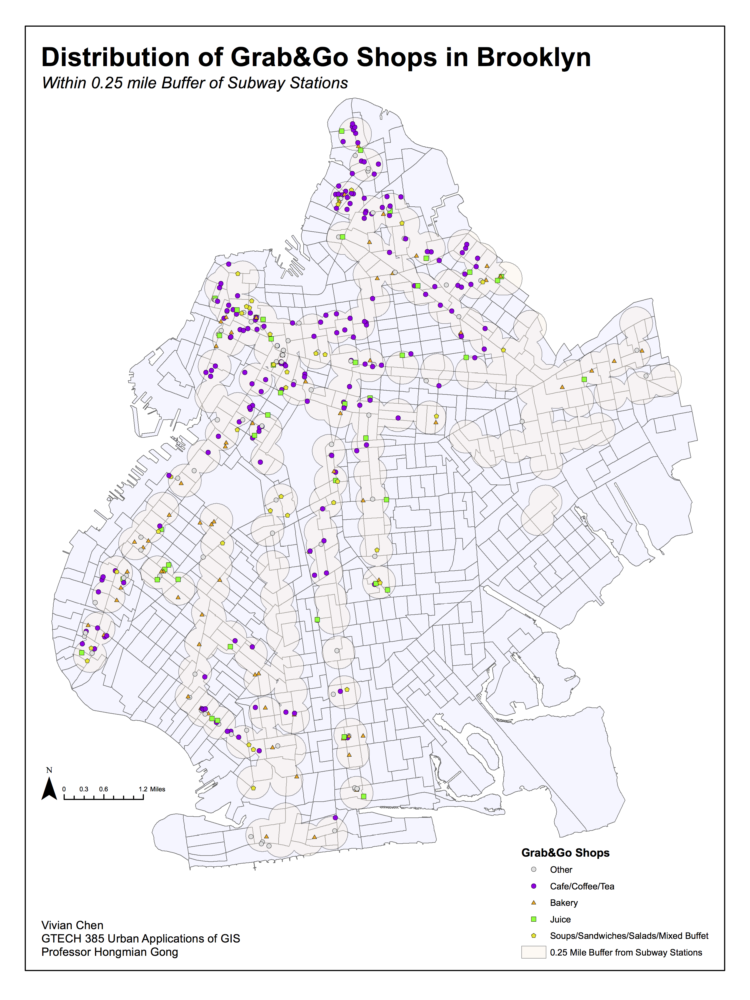
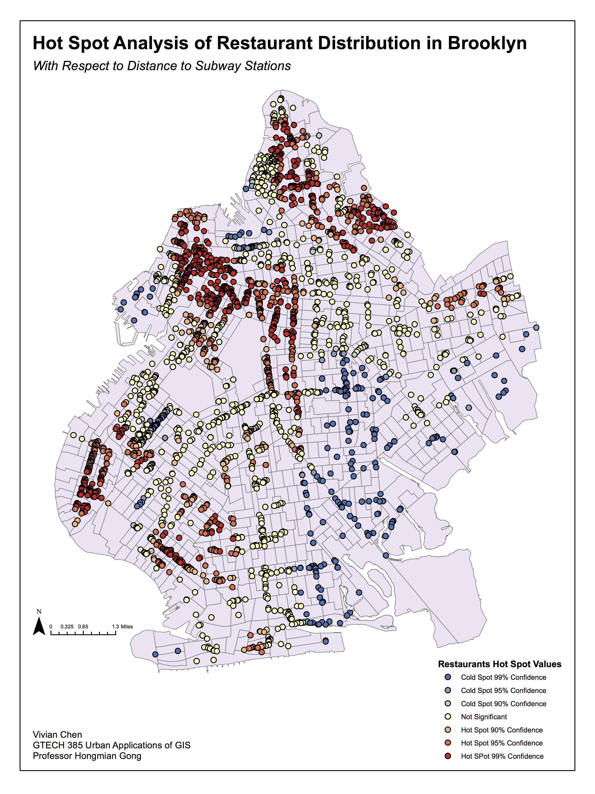
Hunter College - Spring, 2017: GTECH 201 Introduction to GIS
Data Cleaning and Analysis (Excel, Python, ArcGIS), Data Visualization (ArcGIS)
For my final cartographic studio project for this class, I explored the question: What is the relationship between the distribution of hotels and Airbnb rentals in New York City?
Click to enlarge
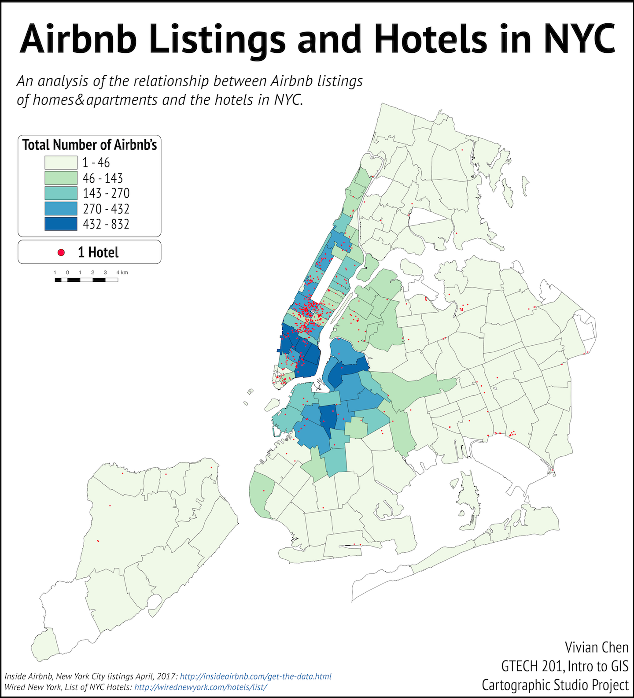
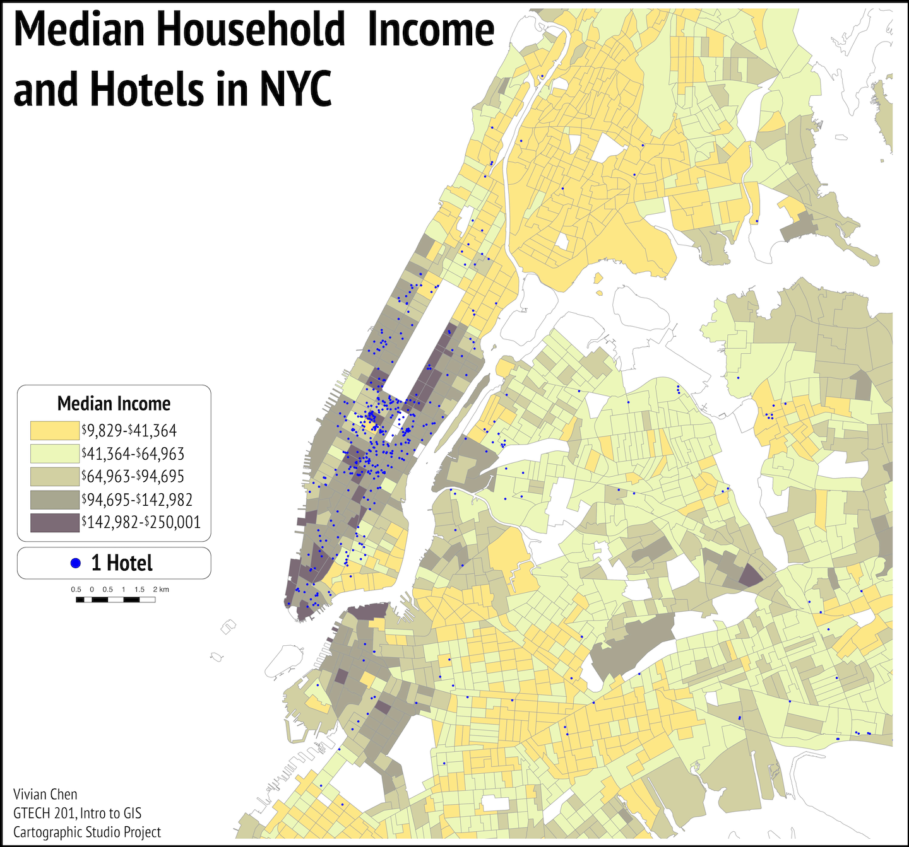